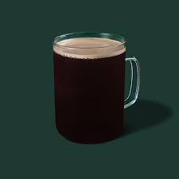

Türk kahvesi Kuru kahve çeşitleri arasında bulunan ve kahve çekirdeğinin çok ince olarak çekilip kavrulmasıyla oluşturulan geleneksel bir lezzettir. Sert kahve çeşitleri arasında bulunan bu lezzetin bir benzeri de Bosna Hersek’te gelenekselleşmiştir. Türk kahvesinden farklı ise şekerinin kahve piştikten sonra eklenmesi ve sunumu sırasında kullanılan kahve fincanının sapsız olmasıdır.
Espresso Hemen hemen tüm kahvelerin çıkış noktası espressodan geçer. İnce olarak öğütülmüş olan kahve, makinelerdeki belirli bir basınç ve yüksek sıcaklıktaki suyla bardağa dökülür. Sütlü kahve çeşitleri için de espressodan faydalanılabilir. Kafein oranı oldukça yüksek olan bu kahve, afrodizyak kahve çeşitleri arasında en yaygın olanlarındandır.
Americano İtalyanlar tarafından geliştirilen bu kahve çeşidi espressoya su eklenmesiyle oluşturulur. Filtre kahveye benzeyen bu lezzetin sertlik derecesini ise Americanoya konan kahve ve su miktarı belirler.
